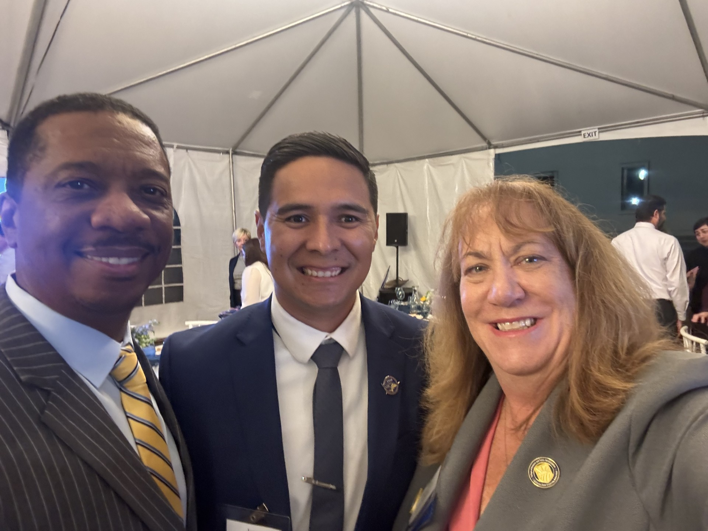
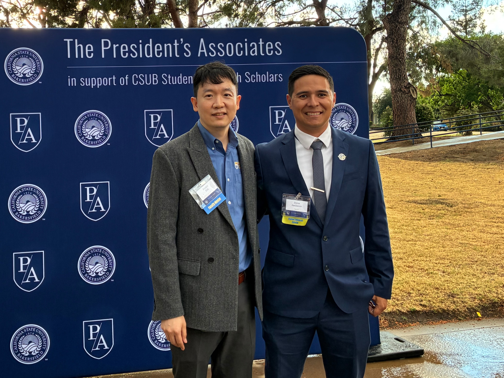
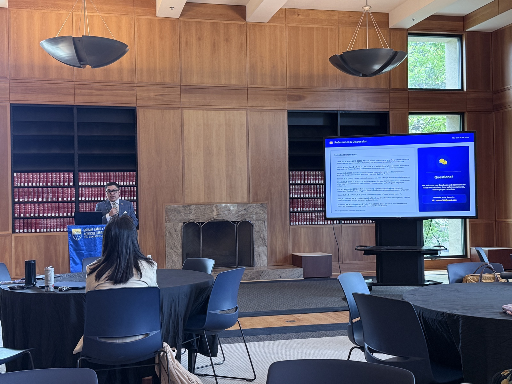
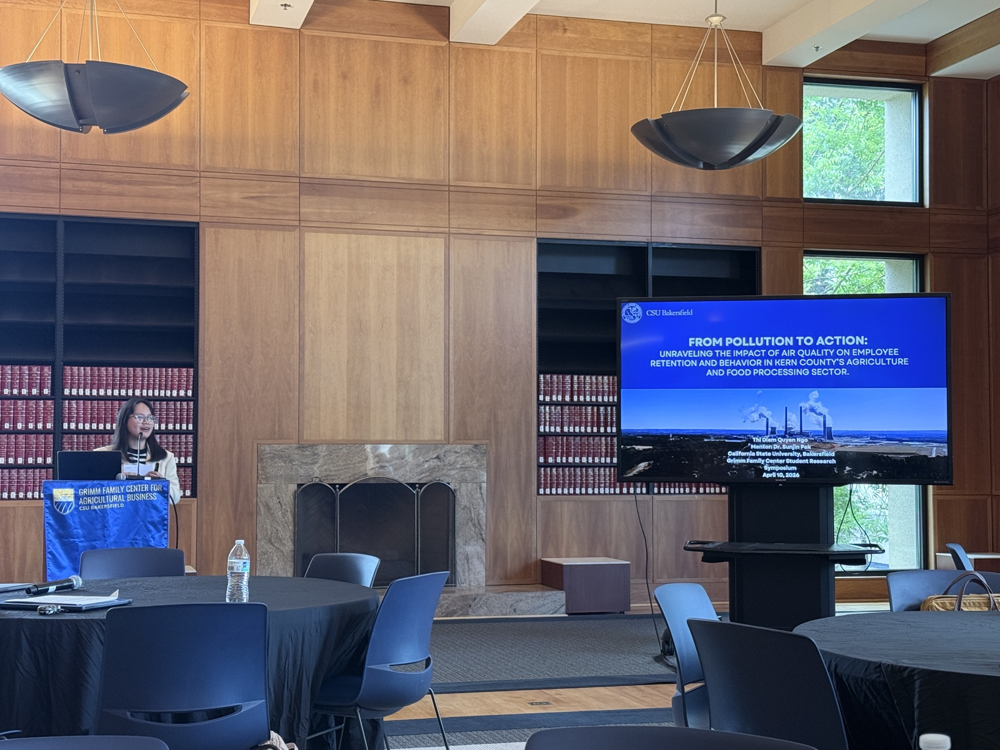
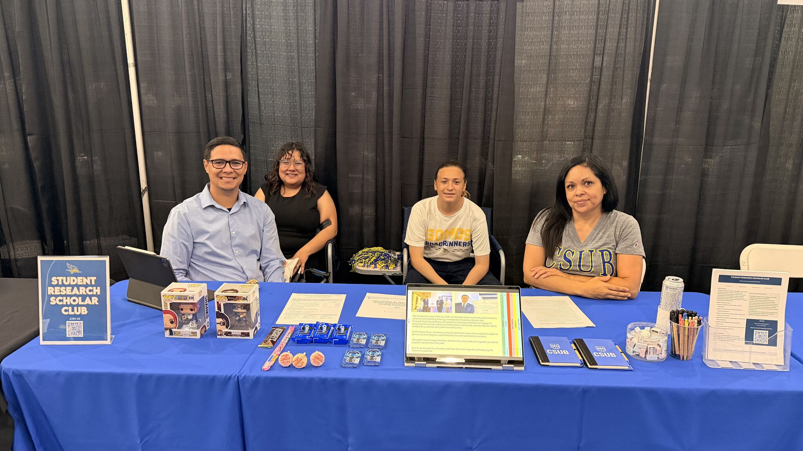
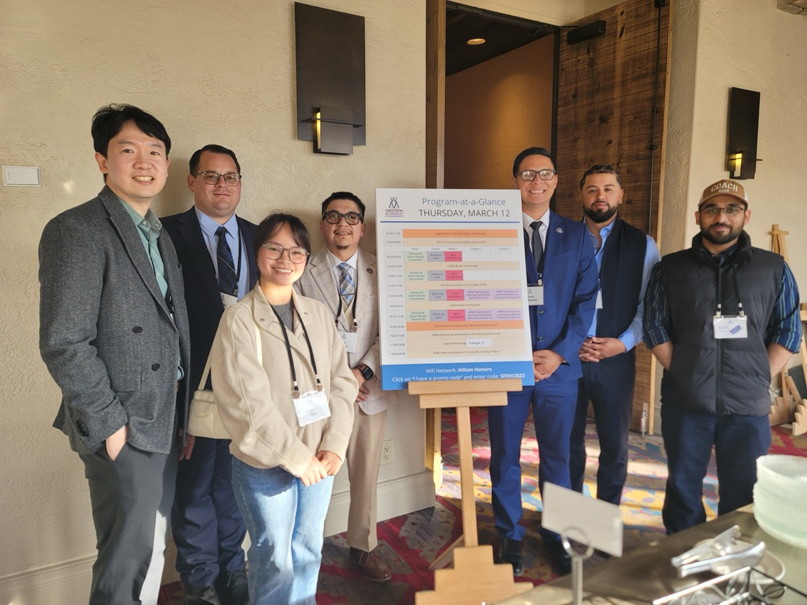

News & Events
Highlights from the Student Research Scholar Club - conference presentations, awards, scholarships, and outreach activities from our members across the academic year.
Jesus Attends President's Associates Recognition Dinner
Jesus Arellanes attended the 2026 President's Associates Recognition Dinner on April 21, 2026, hosted in support of the CSUB Student Research Scholars (SRS) Program. Jesus is one of two SRSC members selected as a Student Research Scholar this year.


- 📸 Jesus with CSUB President Dr. Vernon B. Harper Jr. and BPA Dean Dr. Deborah Cours
- 📸 Jesus with his faculty mentor Dr. Sunjin Pak
Eric & Quin Present at GFCAB Student Research Symposium
Eric Perez and Quin Ngo presented their research at the Grimm Family Center for Agricultural Business (GFCAB) 3rd Annual Student Research Symposium on April 10, 2026, held at the Dezember Reading Room, Walter W. Stiern Library.


- Eric Perez - "The Cost of the Grind: Assessing the Impact of Leader Workaholism on Food Safety Compliance and Employee Retention in Kern County" (Faculty advisor: Dr. Boreum (Jenny) Ju)
- Quin Ngo - "From Pollution to Action: Unraveling the Impact of Air Quality on Employee Retention and Behavior in Kern County's Agriculture and Food Processing Sectors" (Faculty advisor: Dr. Sunjin Pak)
SRSC's First Outreach Event at Future Runner Expo
SRSC officially participated in its very first outreach event on campus at the CSUB Future Runner Expo, introducing prospective students and their families to our club, our mission, and the value of student research. The event resulted in 11 new prospective members interested in joining next semester.

Special thanks to Jesus Arellanes, Eric Perez, Tina Cisneros, and Cyrina Perez for their hard work and dedication in making this event a success.
WAM 2026 Conference
SRSC members presented their research at the Western Academy of Management annual conference in Santa Fe, New Mexico (March 11-14, 2026). Six of our seven members presented two research papers during the Developmental Papers Session.

Michelle & Quin Win 1st Place at SRC 2026
Michelle Sanchez Ojeda and Quin Ngo won 1st place in the Business, Economics, and Public Administration category at the CSUB Student Research Competition (SRC) 2026 on March 6, receiving a $300 award. They will represent CSUB at the CSU Systemwide Student Research Competition at San Jose State University (April 23-25, 2026).
🎬 Watch their presentation: Leader Workaholism & Reproductive Health
Student Research Competition Presentations
All club members presented their research projects at the CSUB Student Research Competition (SRC) 2026. Watch their presentations:
Jesus & Eric Secure $3,000 ASI Grant
Jesus Arellanes and Eric Perez delivered a funding presentation to Associated Students, Inc. (ASI) and secured $3,000 in travel funding to support the club's attendance at the Western Academy of Management (WAM) 2026 conference in Santa Fe, New Mexico.
Eric & Quyen Receive GFCAB Scholarship
Eric Perez and Quyen Ngo have been accepted into the Grimm Family Center for Agricultural Business (GFCAB) Student Research Scholars Program and received $2,000 research scholarships. They will present their work at the GFCAB Student Research Symposium on April 10, 2026.
Jesus & Chris Selected as Student Research Scholars
Jesus Arellanes and Chris Sebastian have been selected for the CSUB Student Research Scholars (SRS) Program and received $2,000 research scholarships. They completed their SRS Orientation in January 2026 and will attend the President's Associates Recognition Dinner on April 21, 2026.
SRSC Founded
The Student Research Scholar Club was founded by Dr. Sunjin Pak together with Chris Sebastian and Jesus Arellanes to provide CSUB students with hands-on research experience and faculty mentorship.